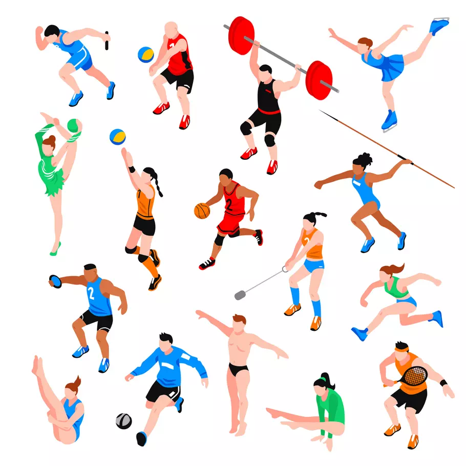

library(rvest)
library(purrr)
list_tables <-
session("https://fr.wikipedia.org/wiki/Liste_des_m%C3%A9daill%C3%A9s_olympiques") |>
html_elements(".wikitable") |>
html_table()Exercices Semaine 2

Ces exercises ont pour but l’implémentation des fonctions pour analyser les données historiques des jeux olympiques.
- Lancer la commande suivante. Que contient l’objet?
L’objet contient une liste avec 6 éléments contenant différentes bases de données.
- On s’intéresse à la première table. Créer un objet intitulédata_medailles_sport_ete contenant le premier élément de list_tables. La table n’est pas bien formattée. Supprimer la première colonne, les noms de colonnes et la première ligne. Renommer les colonnes en c(“Discipline”, “Annees”, “Editions”, “Epreuves_2020”, “Or”, “Argent”, “Bronze”, “Total”, “Athletes_medailles”, “Athletes_or”). Les colonnes Editions, Epreuves_2020, Or, Argent, Bronze, Total seront converties en colonnes d’entiers.
#Créer data_medailles_sport_ete contenant la première table de la liste
data_medailles_sport_ete <- list_tables[[1]]
# Supprimer la première colonne, les noms de colonnes et la première ligne
data_medailles_sport_ete <- data_medailles_sport_ete[-1,-1]
colnames(data_medailles_sport_ete) <- NULL
# Renommer des colonnes
colnames(data_medailles_sport_ete) <- c("Discipline", "Annees", "Editions",
"Epreuves_2020", "Or", "Argent", "Bronze", "Total", "Athletes_medailles",
"Athletes_or")
#Coder en integer
data_medailles_sport_ete[, 3:8] <- lapply(data_medailles_sport_ete[, 3:8], as.integer)- Les 3 disciplines avec le plus de médailles distribuées
library(tidyverse)
library(dplyr)
#Option avec le tidyverse
Top3_disciplines <- data_medailles_sport_ete |> arrange(desc(Total)) |> slice(1:3)
Top3_disciplines# A tibble: 3 × 10
Discipline Annees Editions Epreuves_2020 Or Argent Bronze Total
<chr> <chr> <int> <int> <int> <int> <int> <int>
1 Athlétisme Depui… 29 48 1028 1030 1027 3085
2 Natation(hommes, femm… Depui… 29 37 607 604 603 1814
3 Lutte 1896,… 28 18 430 429 499 1358
# ℹ 2 more variables: Athletes_medailles <chr>, Athletes_or <chr>#Une autre option avec la fct orderet regarder les 3 premiers
order(data_medailles_sport_ete$Total, decreasing=TRUE) [1] 1 18 17 12 5 25 2 7 6 14 9 16 28 8 21 23 26 22 20 3 24 15 10 4 29
[26] 30 13 19 27 11L’athléthisme, la natation et la lutte sont les trois disciplines avec le plus de médailles distribuées.
- Les 3 disciplines avec le moins d’épreuves en 2020
data_medailles_sport_ete_ordonne_epreuves2020 <- data_medailles_sport_ete |> arrange(Epreuves_2020) |> slice(1:3)
data_medailles_sport_ete_ordonne_epreuves2020 ##Sélectionner les 3 dernières# A tibble: 3 × 10
Discipline Annees Editions Epreuves_2020 Or Argent Bronze Total
<chr> <chr> <int> <int> <int> <int> <int> <int>
1 Football 1900–1928,depuis … 27 2 34 34 35 103
2 Golf 1900–1904,depuis … 4 2 8 8 9 19
3 Handball 1936,depuis 1972 14 2 26 26 26 78
# ℹ 2 more variables: Athletes_medailles <chr>, Athletes_or <chr>Le football, le golf et le handball ont été les disciplines avec le moins d’épreuves en 2020
- Calculer une fonction depuis qui représente depuis quelle année l’édition est au programme
calcul_nb_editions_int <- function(depuis) {
return(2024-depuis)
}
calcul_nb_editions_int(1896) ##Mettre l'année de commence au programme.[1] 128